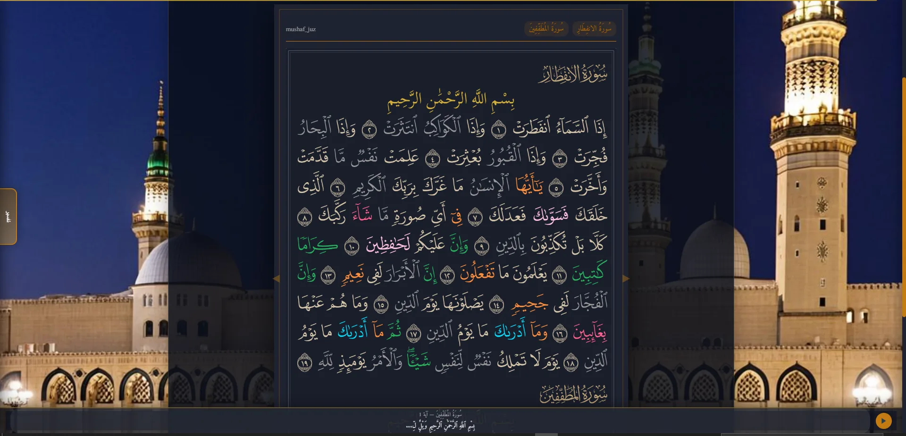
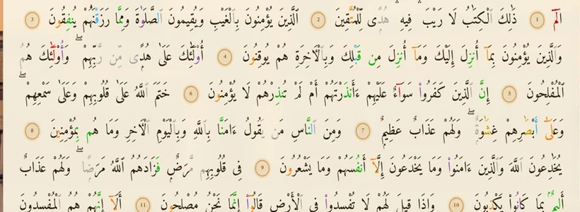
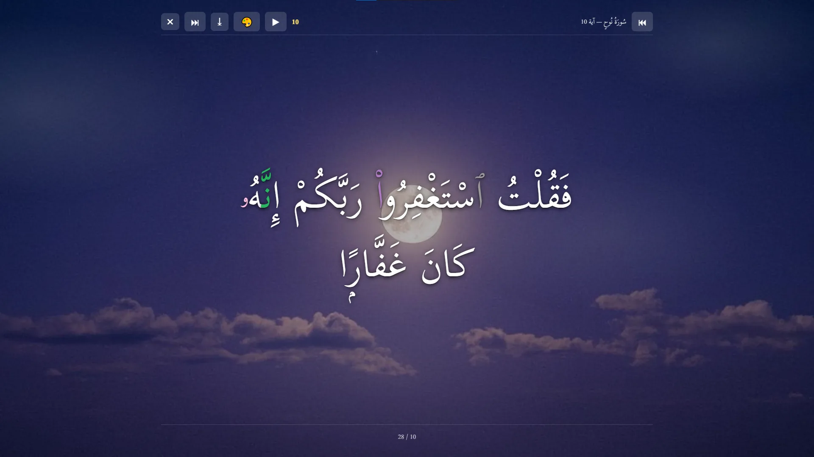

غرفة الحفظ
اختر السورة بالكتابة، حدّد الآيات وعدد التكرارات، واترك الجلسة تعينك على المراجعة بهدوء.
المصحف السليماني
مكان واحد تقرأ فيه القرآن بالطريقة التي تناسبك، وتعود إلى وردك من الموضع الذي توقفت عنده، من دون ازدحام أو تشتيت.

وضع المصحف — تجربة قراءة ليلية هادئةصُمّم المصحف السليماني ليكون رفيقًا يوميًا: يترك النص في المقدمة، ويجعل الأدوات قريبة عند الحاجة، ثم يبتعد بهدوء حين تبدأ القراءة.
تجربة مصممة للورد
لا تحتاج إلى تبديل تطبيقات أو البدء من الصفر. اختر طريقة القراءة، اضبط ما يناسبك، ثم اجعل عودتك إلى المصحف سهلة في كل مرة.

نص واضح، أوضاع مريحة للعين، وأدوات تبقى قريبة من غير أن تقف بينك وبين الآيات.
اختر السورة بالكتابة، حدّد الآيات وعدد التكرارات، واترك الجلسة تعينك على المراجعة بهدوء.
افتح التفسير بجانب القراءة، ثم اجعل اتساعه بالمقدار الذي يريحك من دون تغطية النص.
انتقل بين النهاري والسيبيا والليلي والليلي القاتم، واحفظ موضع القراءة لتعود إليه بسهولة.
حين تريد أن تشارك آية
وضع العرض يقدّم الآية في مساحة مريحة مع خلفية مختارة، ويجعل المشاركة كصورة أو فيديو تجربة مباشرة وهادئة.
جرّب وضع العرض
ابدأ حيث أنت
افتح المصحف، اختر طريقة القراءة التي تريحك، وخذ وقتك مع وردك.
افتح المصحف الآن